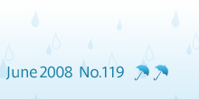
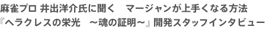

最近はＷｉｉやＤＳでいろいろな遊びができて楽しいですね。私も、スポーツのルールを覚えるのに使ったり、漢字の練習に役立てたり、これまでとは違った使いかたを楽しむようになりました。ソフトの種類が幅広く、手軽に取り組めるものが増えたのも嬉しいですよね。
今回は、コレさえプレイすればマージャンをマスターできるかも！？ Ｗｉｉウェアの新作ソフト『役満Ｗｉｉ 井出洋介の健康麻将』をご紹介します。監修の井出洋介さんに、マージャンの楽しさや上達のコツなどをお聞きしてみました。初心者から上級者まで、マージャンの真の面白さを感じられるソフトです。ぜひご家族でプレイしてみてください。
もう１本の特集は、ＤＳのＲＰＧタイトル『ヘラクレスの栄光 〜魂の証明〜』です。いままでＲＰＧになじみのなかった方から得意な方まで遊べてしまうソフト。今回は開発スタッフに、作品への思い入れや開発秘話、さらには攻略のヒントやクリア後のちょっとした特典のお話も登場しますよ。
『役満Ｗｉｉ 井出洋介の健康麻将』：©2008 Nintendo
『ヘラクレスの栄光 〜魂の証明〜』：©2008 Nintendo/PAON